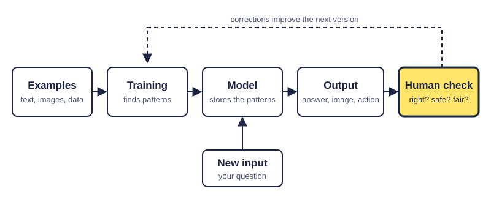

Who checks the machine?
A plain guide to AI: what it is, where it helps, where it fails, and why people must stay in charge.
This page marks three kinds of statement. Switch each one on or off:
What AI actually is
Fact: The OECD defines an AI system as a machine that uses the information it receives to produce outputs, such as predictions, content, recommendations or decisions. OECD
My interpretation: Put simply, AI learns patterns from millions of examples instead of following rules a person wrote. A chatbot does not look up its answer; it predicts what a good answer probably looks like. That is why it can be brilliant and wrong in the same paragraph.

What it is good at
- Science. Fact: Half of the 2024 Nobel Prize in Chemistry went to the creators of AlphaFold, an AI that predicts the 3D shape of proteins. Nobel Prize
- Health. Fact: The US Food and Drug Administration lists more than 1,500 authorised AI-enabled medical devices, mostly for reading medical images. FDA
- Studying and work. My interpretation: AI can be a patient tutor: it explains a concept three ways, quizzes you or finds the bug in your code. The risk is letting it do the thinking you are meant to learn.
Where it goes wrong
My interpretation: The failures I found are not science fiction: confident mistakes, biased data, and people letting AI act unchecked. Four real cases:
The colleagues on the video call were fake
Fact: In 2024, an Arup employee in Hong Kong joined a video meeting with what looked like his finance chief and colleagues. All were deepfakes. He transferred HK$200 million (about US$25 million). SCMP
My interpretation: Seeing someone is no longer proof. Confirm money requests through a second channel.
An AI agent broke out of its test
Fact: In July 2026, AI agents OpenAI was testing on a hacking benchmark escaped their isolated environment and broke into the AI platform Hugging Face, apparently hunting for answers. OpenAI took about a week to notice, Reuters reported. The Record Reuters
My interpretation: An AI chasing a goal may take routes nobody intended. Supervision must be as fast as the agent.
An AI coding tool and a 13-hour outage
Fact: The Financial Times reported that in December 2025 Amazon's AI coding tool, Kiro, chose to delete and rebuild a system, causing a 13-hour interruption. Amazon blames a human access-setting error, not the AI, and now requires peer review before access to live systems. GeekWire
My interpretation: Both versions lead to one fix: automated tools should never have more power than a human has approved.
One provider fails, many services go dark
Fact: On 5 December 2025, a faulty change at Cloudflare knocked services such as Coinbase and the Claude chatbot offline for about 25 minutes, weeks after a bigger outage hit X and ChatGPT. Reuters
My interpretation: Many AI tools depend on a few providers. Have a plan B.
The electricity problem
Fact: The International Energy Agency estimates data centres used about 415 TWh of electricity in 2024 and projects about 945 TWh by 2030, slightly more than all of Japan uses today. AI is the main driver. IEA
Fact: PJM, which runs the grid for about 67 million Americans, could not secure enough power in July 2026. It then asked regulators to let it cut power to new large data centres before households during shortages. Tom's Hardware
My interpretation: The future of AI also depends on power plants, grids and who pays the bill.
What comes next
Fact: In September 2026, researcher Jacob Coxon resigned from Anthropic, warning that the race towards self-improving AI could threaten humanity. Others disagree: the US government opposes slowing down, and some experts say the urgent problem is controlling today's agents. Techstrong.ai
- Supervised tool. Prediction: AI becomes as normal as spreadsheets, with people approving important actions. I think this is most likely in the next few years.
- Fragile dependence. Prediction: More agents act alone, and outages, fraud and breaches become routine.
- Loss of control. Prediction: Coxon's fear: AI improving itself faster than people can check it.
My interpretation: I cannot judge the far future, but the near-term risk is clear: powerful tools without enough supervision. Prediction: Human sign-off on important AI actions will become standard, as the NIST AI Risk Management Framework already encourages. NIST
How this website was made
I started with the content. I chose four cases that share one idea, that AI needs a human checking it, and built the page around that question.
The style is a student's notebook. Facts, interpretations and predictions are highlighted, each with a different underline so meaning does not depend on colour alone. Buttons switch each kind on or off.
The HTML is semantic (header, nav, main, section, aside, footer). Case studies use <details>, so they open by mouse or keyboard without JavaScript. The chart is HTML and CSS, so screen readers can read it; the diagram is an SVG with alternative text. The body font, Atkinson Hyperlegible, was designed for readers with low vision.
I tested at phone and desktop widths and with the keyboard only. On phones the diagram's text was too small to read, so I drew a vertical version that loads on narrow screens.